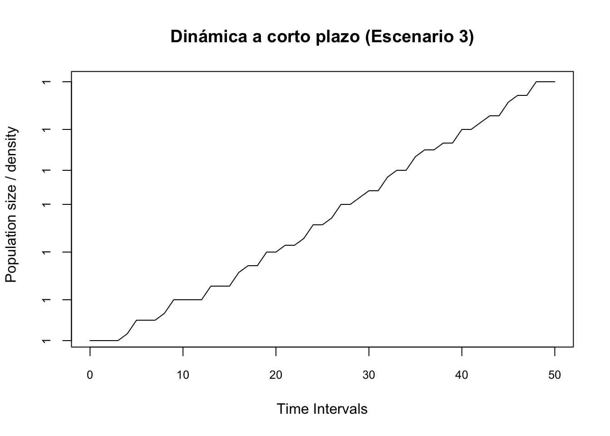

library(popdemo)
library(popbio)
library(ggplot2)
library(dplyr)
library(scales)Dinámica transitoria
Autores: “Mariana Hernández Apolinar y Paola Portillo Tzompa”
Dinámica poblacional de largo y corto plazo
Los modelos de proyección poblacional (MPP), previamente vistos en la Sección XX, son los más utilizados para proyectar la razón de crecimiento de una población después de varios años (i.e. largo plazo) asumiendo que la razón de muertes, la reproducción y el crecimiento de los individuos en las distintas categorías de la población (i.e. tasas vitales) no varían en el tiempo debido a la presencia de condiciones ambientales constantes (Caswell, 2001; Crone et al. 2011; Koons et al. 2021). Al mantenerse constantes estas variables en el largo plazo (i.e. deterministas), la población incrementará o decrecerá a una velocidad constante y no cambiará la proporción de individuos por categoría de tamaño/estado (i.e. comportamiento asintótico), [Bierzychudek (1999); Caswell, 2001). Sin embargo, en la naturaleza estas variables distan de ser constantes (i.e. deterministas), debido a que las poblaciones experimentan recursos limitados (v.g. alimento, sitios de refugio), ambientes heterogéneos y cambiantes que perturban las poblaciones (v.g. deforestación, sequía, huracanes, enfermedades, etc), afectando su dinámica y sugiriendo que la tasa de crecimiento de largo plazo no es un buen predictor de los cambios que enfrentan dichas las poblaciones (Bierzychudek (1999)). De ahí que, se hayan desarrollado modelos que integran dicha variación y que permiten hacer proyecciones más realistas sobre la dinámica poblacional de la especie de estudio, tal es el caso de los modelos de crecimiento estocástico y los análisis de dinámica transitoria.
En particular, los modelos de dinámica transitoria surgen como una alternativa para analizar la dinámica de una población en el corto plazo, cuando se presenta un evento de perturbación repentino que afecta la abundancia de individuos en una o varias de las categorías de poblacional (i.e.cambios en el modelo) o que la estructura de la población varia en tiempo. El analisis no asume cambios en las entradas de la matriz de transición (i.e. condiciones constantes; Vindeness et al. 2021). De esta forma, en este análisis se evalúa la respuesta inmediata de la población; es decir, antes de alcanzar la estructura estable de estadios/edades y de crecer a una tasa constante (Bierzichudek, 1999; Koons et al. 2021, Stott et al. 2010). Esta respuesta de corto plazo es pasajera o temporal y resulta de suponer que la estructura inicial de la población es inestable; de ahí, el nombre de “dinámica transitoria”. Bajo este supuesto, es importante saber qué tanto influye dicha estructura inicial inestable en la dinámica poblacional temporal de corto plazo (Koon et al. 2021). Esta respuesta se determina a través de las discrepancias o diferencias que hay entre la estructura inicial (i.e. corto plazo) y la estructura estable (i.e. largo plazo) de la población analizada (Raventós et al. 2015).
A partir de lo anterior, es evidente que los dos acercamiento para evaluar la dinamica poblacional usando el método tradicional o de de dinámica transitoria abordan distintos aspectos de la dinámica poblacional de una especie y, por lo tanto, hacen uso de ecuaciones distintas en su análisis (Koons et al. 2021). A continuación se listan la serie de pasos a seguir para facilitar y asimilar el desarrollo del complejo análisis de la dinámica transitoria. Este análisis fue planteado por Stott y colaboradores (Stott, Townley, and Hodgson 2011; Stott, Hodgson, and Townley 2012a; Stott, Hodgson, and Townley 2012b) y se lleva a cabo en el Programa de estadística R.
***
Paso 1. Matriz de transición y estructura poblacional inicial.
En primer lugar se debe contar con una matriz de proyección poblacional y su correspondiente vector de la estructura poblacional observada al inicio del estudio. A lo largo del desarrollo del análisis en el presente Capítulo se usarán los datos obtenidos por Tremblay et al. (Tremblay, Raventos, and Ackerman 2015) y Schödelbauerová et al. (Schödelbauerová, Tremblay, and Kindlmann 2010) para la orquídea epífita Lepanthes rubripetala; en específico usaremos los datos de la población 1. En esta especie, los individuos se clasificaron en cuatro categorías de estado: plántula (PL), juvenil (J), adulto no reproductivo (NR) y adulto reproductivo (AR). Esta última catergoría florece a largo de todo el año, por lo que el seguimiento de la población fue mensual (Tremblay, Raventos, and Ackerman 2015; Schödelbauerová, Tremblay, and Kindlmann 2010).
En primer lugar se debe contar con una matriz de proyección poblacional y su vector correspondiente de la estructura poblacional observada al inicio del estudio. En en este caso se usarán los datos obtenidos para Lepanthes rubripetala por Tremblay y colaboradores (Tremblay, Raventos, and Ackerman 2015; Schödelbauerová, Tremblay, and Kindlmann 2010).
A continuación incorporamos la información de nuestra matriz y la abundancia de individuos por categoría observada al inicio de nuestro estudio. Las función matrix de R fue usada para construir la matriz y n0 se fue usado para nombrar el vector de la estructura inicial obsevada. Cabe señalar que se, a lo largo del análisis de dinámica transitoria se usan cinco paquetes de R (popdemo, popbio, ggplot2, dplyr, scales), por lo que se cargan desde un principio.
PROYECTO DE DINAMICA TRANSITORIA O DE CORTO PLAZO
PART I: DINÁMICA POBLACIONAL DE LARGO PLAZO
Éste es un análisis de dinámica transitoria para Lepanthes rubripetala (Población 1), cuyo ciclo de vida fue dividido en cuatro clases de estado:
- PL = plántula,
- J = juvenil,
- NR = adultos no reproductivos,
- AR = adultos reproductivos.
Librerías de R requeridas para el análisis
PASO 1. MATRIZ DE PROYECCIÓN POBLACIONAL y ESTRUCTURA POBLACIONAL INICIAL \(t_{0}\)
#Capturar los datos de la matriz para L. rubripetala (Tremblay et al. 2015)
Lr1 <- matrix(c(0.4324, 0, 0, 0.15,
0.3784, 0.8459, 0, 0,
0, 0.0034, 0.7954,0.2300,
0, 0.0890, 0.1841,0.7510), byrow=TRUE,ncol=4)
#Capturar las categorias de estado
estadios <- c("PL", "J", "NR", "AR")
colnames(Lr1) <- rownames(Lr1) <- estadios
#Obtener la matriz L. rubripetala
Lr1 <- matrix(Lr1[1:4, ], nrow = 4, dimnames = list(estadios, estadios))
Lr1 PL J NR AR
PL 0.4324 0.0000 0.0000 0.150
J 0.3784 0.8459 0.0000 0.000
NR 0.0000 0.0034 0.7954 0.230
AR 0.0000 0.0890 0.1841 0.751# Capturar y obtener el vector inicial (datos de campo) de clases de estado población 1 (Schödelbauerová et al. 2010)
n0 <- c(0, 46, 38, 82)
n0[1] 0 46 38 82
***
Capturar y obtener el vector inicial (datos de campo) de clases de estado población 1
Paso 1a. Matriz de transición y estructura poblacional inicial. En el siguiente cuadro se comprueba que la matriz de la estructura poblacional inicial de L. rubripetala haya sido incorporada sin errores. La primera formada por 4 renglones y 4 columnas y la segunda por 4 elementos, que indican el número de individuos encontrados en el estado de plántula (0), juvenil (46), adulto no reproductivo (38) y adulto reproductivo (82) (Tremblay, Raventos, and Ackerman 2015; Schödelbauerová, Tremblay, and Kindlmann 2010).
PL J NR AR
PL 0.4324 0.0000 0.0000 0.150
J 0.3784 0.8459 0.0000 0.000
NR 0.0000 0.0034 0.7954 0.230
AR 0.0000 0.0890 0.1841 0.751[1] 0 46 38 82
***
Crecimiento asintótico
La definición del crecimiento asintótico de la población lambda se basa en la tasa de crecimiento poblacional cuando la población este a su nivel estable de estructura de edades/estados. Por consecuencia se asume que la población llegue o este a un nivel estructura de edades/estados estable. Para la población de Lepanthes rubripetala se obtiene una tasa de crecimiento poblacional de 1.007, lo que indica que la población crece a una tasa constante de 1.007 entre \(t_{0}\) y \(t_{1}\). Entonces si la población tuviese 1000 individuos en promedio hubiese 7 individuos más en \(t_{1}\) o sea el siguiente mes. Nota que las poblaciones de Lepanthes nunca son tan grandes (Tremblay (1997)), pero es un ejemplo para ilustrar el concepto.
#Análisis asintótico (i.e. largo plazo) del crecimiento poblacional de L. rubripetala
#La orquídea florece todo el año, por lo que el seguimiento de la población fue mensual.
#PARÁMETROS POBLACIONALES
##lambda: Tasa de crecimiento poblacional
lambda <-lambda(Lr1)
lambda[1] 1.007206Dinámica transitoria
En la dinámica transitoria o de corto plazo, Stott y colaboradores (2010, 2012) incorporaron la estocasticidad demográfica para analizar el cambio de la estructura poblacional debido a una perturbación de origen biótico, abiótico o antropogénico (i.e. cambios en la estructura incicial observada). Este tipo de estocasticidad se refiere a la sobrevivencia y reproducción en número entero y finito; es decir, un individuo sobrevive o no, lo cual se representa con 1 ó 0, al igual que puede reproducirse (1) o no (0). La incorporación de esta característica en los individuos genera una variación no cíclica ni predecible en la respuesta de los individuos de una población.
En el análisis transitorio, el modelo sesgado por etapas (i.e. categorías) es el procedimiento que se usa para evaluar la perturbación de la estructura inicial. La perturbación o sesgo en la estructura inicial se evalúa modificando la proporción de individuos presentes en alguna categoría de la estructura poblacional. Cabe señalar que estas modificaciones representan distintos escenarios o simulaciones que ocurren o pueden ocurrir en nuestra población de estudio.
Por ejemplo, la estructura inicial en la población 1 de Lepanthes rubripetala fue la siguiente: (0,46,38,82). En este caso, al modificar la proporción de individuos presente en una, dos o en todas las categorías de la población se simuló el cambio en la dinámica en el corto plazo; es decir, en un momento previo a que se alcance el crecimiento estable o de largo plazo. En Lepanthes rubripetala se hicieron cinco simulaciones o escenarios al suponer las siguientes proporciones de individuos por categoría (Tremblay et al, 2015):
- Límite inferior: (1,0,0,0), los individuos de la población se contran en la categoría de plántulas (Lower bound).
- Inicio I: (0.15, 0.35, 0,30, 0.20), mayor proporción de individuos en las categorías juvenil y adulto no reproductivo.
- Estructura estable de la población: los individuos de la población tienen una abundancia de acuerdo con w-max.
- Inicio II: (0.4, 0.2,0.2, 0.2), mayor proporción de plántulas y una proporción similar en las categorías juvenil, adulto no reproductivo y adulto reproductivo.
- Límite superior: (0,0,0,1), los individuos de la población se contran en la categoría de adulto reproductivo.
Dinámica poblacional absoluta. Como consecuencia de las perturbaciones o escenarios existen cambios en el crecimiento poblacional, los cuales son evidentes si se grafican. Un aspecto a considerar es que, la gráfica que se genera incluye la influencia de la dinámica trasitoria y asintótica, por lo que se le denomina dinámica poblacional absoluta (Fig. 2A de Tremblay y colaboradores, 2015).
##PASO 4. DINÁMICA POBLACIONAL ABSOLUTA.
#Se proyecta el crecimiento poblacional ante cambios en la estructura
#inicial debidos a la perturbación (5 escenarios). Esta gráfica incluye la
#influencia de la dinámica trasitoria y asintótica, por lo que se le denomina
#dinámica poblacional absoluta. Proyección a 50 meses.
#Definir los margenes
par(mfrow = c(1, 1))
par(mar = c(3, 3, 3, 3))
#Librerias de R requeridas para el análisis
library(popdemo)
library(popbio)
library(ggplot2)
library(dplyr)
library(scales)
#Vector original
nLr0 <- c(0, 46, 38, 82)
#Escenario 1. Límite inferior
nLr1 <- c(166, 0, 0, 0)
#Proporción de individuos por categoría
nLr1 <- nLr1/sum(nLr1)
nLr1[1] 1 0 0 0#Gráfica de barras del escenario 1
barplot(nLr1, names.arg = 1:4)
title(main = "Escenario 1", xlab = "Categoría", ylab = "Proporción")
#Proyección de la dinámica escenario 1
pr1 <- project(Lr1, vector = nLr1, time = 50)
plot(pr1, log = "y", ylim = c(0.1, 1.6), ann = FALSE)
title(main = "Proyección de la dinámica (Escenario 1)", xlab = "Time intervals", ylab = "Population size/density")
#Escenario 2. Inicio I
nLr2 <- c(25, 58, 50, 33)
#Proporción de individuos por categoría
nLr2 <- nLr2/sum(nLr2)
nLr2[1] 0.1506024 0.3493976 0.3012048 0.1987952#Gráfica de barras del escenario 1
barplot(nLr2, names.arg = 1:4)
title( main = "Escenario 2", xlab = "Categoría", ylab = "Proporción")
#Proyección de la dinámica escenario 2
pr2 <- project(Lr1, vector = nLr2, time = 50)
plot(pr2, log = "y", ylim = c(0.1, 1.6), ann = FALSE)
title(main = "Proyección de la dinámica (Escenario 2)", xlab = "Time intervals", ylab = "Population size/density")
#Escenario 3. Estructura estable
# Estructura estable de estados
Wmax <- stable.stage(Lr1)
nLr3 <- Wmax
#Gráfica de barras del escenario 3
barplot(nLr3, names.arg = 1:4)
title( main = "Escenario 3", xlab = "Categoría", ylab = "Proporción")
#Proyección de la dinámica escenario 3
Lr1st <- (Lr1/lambda)
Lr1st PL J NR AR
PL 0.4293064 0.000000000 0.0000000 0.1489268
J 0.3756927 0.839848010 0.0000000 0.0000000
NR 0.0000000 0.003375675 0.7897093 0.2283545
AR 0.0000000 0.088363250 0.1827829 0.7456270eigen(Lr1st)eigen() decomposition
$values
[1] 1.0000000+0.00000000i 0.8259670+0.00000000i 0.4892619+0.06421907i
[4] 0.4892619-0.06421907i
$vectors
[,1] [,2] [,3] [,4]
[1,] -0.1605030+0i -0.03255031+0i -0.6050037+0.1108223i -0.6050037-0.1108223i
[2,] -0.3765163+0i 0.88098064+0i 0.6483299+0.0000000i 0.6483299+0.0000000i
[3,] -0.6739307+0i -0.46400142+0i 0.1712014+0.2009688i 0.1712014-0.2009688i
[4,] -0.6150542+0i -0.08669643+0i -0.2913524-0.2162698i -0.2913524+0.2162698ipr3 <- project(Lr1st, vector = Wmax, time = 50)
plot(pr3, log = "y", ylim = c(0.1, 1.6), ann = FALSE)
title(main = "Proyección de la dinámica (Escenario 3)", xlab = "Time intervals", ylab = "Population size/density")
#Escenario 4. Inicio II
nLr4 <- c(66, 33, 33, 33)
#Proporción de individuos por categoría
nLr4 <- nLr4/sum(nLr4)
nLr4[1] 0.4 0.2 0.2 0.2#Gráfica de barras del escenario 4
barplot(nLr4, names.arg = 1:4)
title( main = "Escenario 4", xlab = "Categoría", ylab = "Proporción")
#Proyección de la dinámica escenario 4
pr4 <- project(Lr1, vector = nLr4, time = 50)
plot(pr4, log = "y", ylim = c(0.1, 1.6), ann = FALSE)
title(main = "Proyección de la dinámica (Escenario 4)", xlab = "Time intervals", ylab = "Population size/density")
#Escenario 5. Límite superior
nLr5 <- c(0, 0, 0, 166)
#Proporción de individuos por categoría
nLr5 <- nLr5/sum(nLr5)
nLr5[1] 0 0 0 1#Gráfica de barras del escenario 5
barplot(nLr5, names.arg = 1:4)
title( main = "Escenario 5", xlab = "Categoría", ylab = "Proporción")
#Proyección de la dinámica escenario 5
pr5 <- project(Lr1, vector = nLr5, time = 50)
plot(pr5, log = "y", ylim = c(0.1, 1.6), ann = FALSE)
title(main = "Proyección de la dinámica (Escenario 5)", xlab = "Time intervals", ylab = "Population size/density")
#Gráfica de la dinámica absoluta
Population_density <- stack(c(as.data.frame(pr1), as.data.frame(pr2), as.data.frame(pr3), as.data.frame(pr4), as.data.frame(pr5)))
Population_density[, "time"] <- rep(seq(1, nrow(pr1), 1), 5)
names(Population_density) <- c("Values", "Projection", "Time")
#Population_density[, "Projection"] <- c(rep("Projection 1", len), rep("Projection 2", len), rep("Projection 3", len), rep("Projection 4", len), rep("Projection 5", len))
abs.plot <- ggplot(data = Population_density) +
theme_classic() +
theme(panel.border = element_blank()) +
theme(legend.position = "none") +
geom_line(aes(x = Time, y = Values, group = Projection, colour = Projection), linewidth = 0.8) +
geom_hline(yintercept = 1, linewidth = 0.8) +
scale_colour_manual(values = c("#C6E2FF", "#B9D3EE", "black", "#9FB6CD", "#6C7B8B")) +
theme(axis.title.x = element_text(vjust = -1, size = 12)) +
theme(axis.title.y = element_text(vjust = 1, size = 12)) +
theme(axis.text = element_text(size = 12)) +
labs(title = "Absolut population dynamics", x = "Projection intervals", y = "Population density relative to lambda max")+
theme(plot.title = element_text(hjust = 0.5, face = "bold", size = 12))
abs.plot 
Dinámica transitoria estandarizada: límites
Con el fin de evaluar en el corto plazo los cambios cuantitativos en la población en respuesta a una perturbación determinada se calculan los límites de la dinámica transitoria a través Índices de transferencia y se proyecta el crecimiento de la población en el corto plazo.
Dinámica transitoria específica de la población.
a proyección se hace sin la influencia de la dinámica asintótica. hecho que facilita y hace equitativa la comparación entre los modelos de los distintos escenarios. Se elimina el efecto de la dinámica asintótica al estandarizar la matriz y el vector de la estructura. En el primer caso se usa el comando ‘standard.A=T’, lo cual supone que en el largo plazo la tasa de crecimiento poblacional tendrá un valor de 1 (unidad) -por lo que la población no crecerá ni declinará, en el segundo caso se usa el comando ‘standard.vec=T’, que implica que éste suma 1 (Stoot et al., 2010, 2012). DINÁMICA POBLACIONAL TRANSITORIA ESTANDARIZADA
Índices de transferencia. Con el fin de evaluar en el corto plazo qué cambios cuantitativos habría en la población como respuesta ante una perturbación determinada, se calculan los límites de la dinámica transitoria a través de los Índices de transferencia, que incluyen los siguiente tres parámetros (Stoot et al. 2012):
Reactividad alta y Reactividad baja (Upper reactivity y Lower reactivity) que representan el crecimiento o el decremento inmediato (i.e. primer intervalo de tiempo) de la población antes de alcanzar la tasa constante de crecimiento poblacional.
Máxima amplificación/Máxima atenuación (Maximum amplification/Maximum attenuation) que indican,respectivamente, el incremento o decremento máximo futuro del crecimiento poblacional previo a alcanzar la tasa constante de crecimiento poblacional.
Inercia alta e Inercia baja (Upper inertia y Lower inertia) que evalúan el límite más alto o el más bajo en el crecimiento de la población antes de alcanzar la tasa constante de crecimiento poblacional, respectivamente.
### PARTE II: DINÁMICA POBLACIONAL TRANSITORIA ESTANDARIZADA.
#Modelo de Dinámica transitoria específica de la población
## La dinámica de corto plazo se projecta a partir de la matriz de transición y el vector inicial previamente definidos
#Definir los margenes
library(popdemo)
library(ggplot2)
#Vector de estructura inicial: abundancia por categoría de acuerdo con el estado
n0 <- c(0, 46, 38, 82)
## 1) PROYECCIÓN DE LA DINÁMICA DE CORTO PLAZO. Con la función PROJECT se proyectar la a 50 meses, tomando en
#cuenta la matriz de transición poblacional y el vector de la estructura.
#En esta función se elimina el efecto de la dinámica asintótica al estandarizar:
#a) la matriz usando el comando 'standard.A=T', lo cual significa que
#en el largo plazo la tasa de crecimiento poblacional tendrá
#un valor de 1 (unidad), por lo que la población no crecerá ni declinará.
#b) el vector de la estructura usando 'standard.vec=T', lo cual supone que éste suma 1,
# Ambas estandarizaciones facilitan y hacen equitativa la comparación entre modelos
#con distintos tamaños poblacionales y distintas tasas de crecimiento de largo plazo.
#Gráfica de la dinámica de corto plazo por escenario. En la graficación se usa la misma matriz pero se cambia el vector de acuerdo con el escenario
#Escenario 1: Límite inferior
pr2.1 <- project(Lr1, vector = nLr1, time = 50,
standard.A = T, standard.vec = T)
#Plot the amplification projection and label it
# Se atenua (decrece)
plot(pr2.1, log = "y", main = "Dinámica a corto plazo (Escenario 1)", cex.axis = 0.8)
#Escenario 2. Inicio I
pr2.2 <- project(Lr1, vector = nLr2, time = 50,
standard.A = T, standard.vec = T)
#Plot the amplification projection and label it
plot(pr2.2, log = "y", main = "Dinámica a corto plazo (Escenario 2)", cex.axis = 0.8) # Se atenua (decrece)
#Escenario 3. Estructura estable
pr2.3 <- project(Lr1, vector = nLr3, time = 50,
standard.A = T, standard.vec = T)
#Plot the amplification projection and label it
plot(pr2.3, main = "Dinámica a corto plazo (Escenario 3)", cex.axis = 0.8) # Se amplifica (crece)
#Escenario 4. Inicio II
pr2.4 <- project(Lr1, vector = nLr4, time = 50,
standard.A = T, standard.vec = T)
#Plot the amplification projection and label it
plot(pr2.4, log = "y", main = "Dinámica a corto plazo (Escenario 4)", cex.axis = 0.8)# Se atenua (decrece)
#Escenario 5. Límite superior
pr2.5 <- project(Lr1, vector = nLr5, time = 50,
standard.A = T, standard.vec = T)
#Plot the amplification projection and label it
plot(pr2.5, log = "y", main = "Dinámica a corto plazo (Escenario 5)", cex.axis = 0.8)# Se amplifica (crece)#2) LIMITES TRANSITORIOS POR ESCENARIO.
#Escenario 1: Límite inferior
#Cálculo de los limites transitorios
library(popdemo)
lim.trans <- as.data.frame(matrix(NA, 5, 3))
names(lim.trans) <- c("reac", "maxatt", "inertia")
reac1<-reac(Lr1, vector = nLr1)
lim.trans[1, 1] <- reac1
reac1[1] 0.8049991maxatt1<-maxatt(Lr1, vector = nLr1, return.t=T)
maxatt1$maxatt
[1] 0.4643848
$t
[1] 49lim.trans[1, 2] <- maxatt1[1]
inertia1<-inertia(Lr1, vector = nLr1)
inertia1[1] 0.4643642lim.trans[1, 3] <- inertia1
#Escenario 2. Inicio I
reac2<-reac(Lr1, vector = nLr2)
reac2[1] 0.9628771lim.trans[2, 1] <- reac2
maxatt2<-maxatt(Lr1, vector = nLr2, return.t=T)
maxatt2$maxatt
[1] 0.8863718
$t
[1] 39lim.trans[2, 2] <- maxatt2[1]
inertia2<-inertia(Lr1, vector = nLr2)
inertia2[1] 0.8863327lim.trans[2, 3] <- inertia2
#Escenario 3. Estructura estable
##reac3<-reac(Lr1, vector = nLr3)
#lim.trans[3, 1] <- reac1
#reac3
#maxamp3<-maxamp(Lr1, vector = nLr3, return.t=T)
#maxamp3
#lim.trans[3, 2] <- maxamp3[1]
#inertia3<-inertia(Lr1, vector = nLr3)
#inertia3
#lim.trans[3, 3] <- inertia3
#Escenario 4. Inicio II
reac4<-reac(Lr1, vector = nLr4)
lim.trans[4, 1] <- reac1
reac4[1] 0.9273971maxatt4<-maxatt(Lr1, vector = nLr4, return.t=T)
maxatt4$maxatt
[1] 0.7894384
$t
[1] 42lim.trans[4, 2] <- maxatt4[1]
inertia4<-inertia(Lr1, vector = nLr4)
inertia4[1] 0.7894036lim.trans[4, 3] <- inertia4
#Escenario 5. Límite superior
reac5<-reac(Lr1, vector = nLr5)
lim.trans[5, 1] <- reac5
reac5[1] 1.122908maxamp5<-maxamp(Lr1, vector = nLr5, return.t=T)
maxamp5$maxamp
[1] 1.23733
$t
[1] 34lim.trans[5, 2] <- maxamp5[1]
inertia5<-inertia(Lr1, vector = nLr3)
inertia5[1] 1lim.trans[5, 3] <- inertia5
# Dinamica transitoria plot
len <- nrow(pr2.1)
Population_density <- stack(c(as.data.frame(pr2.1), as.data.frame(pr2.2), as.data.frame(pr2.3), as.data.frame(pr2.4), as.data.frame(pr2.5)))
Population_density[, "time"] <- rep(seq(1, len, 1), 5)
names(Population_density) <- c("Values", "Projection", "Time")
Population_density[, "Projection"] <- c(rep("Projection 1", len), rep("Projection 2", len), rep("Projection 3", len), rep("Projection 4", len), rep("Projection 5", len))
trans.plot <- ggplot(data = Population_density) +
theme_classic() +
theme(panel.border = element_blank()) +
theme(legend.position = "none") +
geom_line(aes(x = Time, y = Values, group = Projection, colour = Projection), linewidth = 0.8) +
scale_colour_manual(values = c("#C6E2FF", "#B9D3EE", "black", "#9FB6CD", "#6C7B8B")) +
theme(axis.title.x = element_text(vjust = -1, size = 12)) +
theme(axis.title.y = element_text(vjust = 1, size = 12)) +
theme(axis.text = element_text(size = 15)) +
labs(title = "Transient population dynamics" ,x = "Projection intervals", y = "Population density relative to lambda max") +
theme(plot.title = element_text(hjust = 0.5, face = "bold", size = 12)) +
ylim(0.2, 1.5)
trans.plot +
geom_text(x = 45, y = 1.09, label = expression(paste(bar(rho) == 0.46)), hjust = 1.0, vjust = -1) +
geom_text(x = 45, y = 0.74, label = expression(paste(bar(rho) == 0.89)), hjust = 1.0, vjust = -1) +
geom_text(x = 45, y = 0.64, label = expression(paste(bar(rho) == 0.70)), hjust = 1.0, vjust = -1) +
geom_text(x = 45, y = 0.33, label = expression(paste(bar(rho) == 1)), hjust = 1.0, vjust = -1)Warning in is.na(x): is.na() applied to non-(list or vector) of type
'expression'
Warning in is.na(x): is.na() applied to non-(list or vector) of type
'expression'
Warning in is.na(x): is.na() applied to non-(list or vector) of type
'expression'
Warning in is.na(x): is.na() applied to non-(list or vector) of type
'expression'
Revisión:
References
Bierzychudek, Paulette. 1999. “Looking Backwards: Assessing the Projections of a Transition Matrix Model.” Ecological Applications 9 (4): 1278–87.
Raventós, José, Elaine González, Ernesto Mújica, and Andreu Bonet. 2015. “Transient Population Dynamics of Two Epiphytic Orchid Species After Hurricane Ivan: Implications for Management.” Biotropica 47 (4): 441–48. https://doi.org/10.1111/btp.12231.
Schödelbauerová, I, RL Tremblay, and P Kindlmann. 2010. “Prediction Vs. Reality: Can a PVA Model Predict Population Persistence 13 Years Later?” Biodiversity and Conservation 19: 637–50. https://doi.org/10.1007/s10531-009-9724-1.
Stott, Iain, David James Hodgson, and Stuart Townley. 2012a. “Beyond Sensitivity: Nonlinear Perturbation Analysis of Transient Dynamics.” Methods in Ecology and Evolution 3 (4): 673–84.
Stott, Iain, David J Hodgson, and Stuart Townley. 2012b. “Popdemo: An r Package for Population Demography Using Projection Matrix Analysis.” Methods in Ecology and Evolution 3 (5): 797–802.
Stott, Iain, Stuart Townley, and David James Hodgson. 2011. “A Framework for Studying Transient Dynamics of Population Projection Matrix Models.” Ecology Letters 14 (9): 959–70.
Tremblay, RL. 1997. “Distribution and Dispersion Patterns of Individuals in Nine Species of Lepanthes (Orchidaceae).” Biotropica 29 (1): 38–45.
Tremblay, RL, J Raventos, and JD Ackerman. 2015. “When Stable-Stage Equilibrium Is Unlikely: Integrating Transient Population Dynamics Improves Asymptotic Methods.” Annals of Botany 116 (3): 381–90. https://doi.org/10.1093/aob/mcv031.